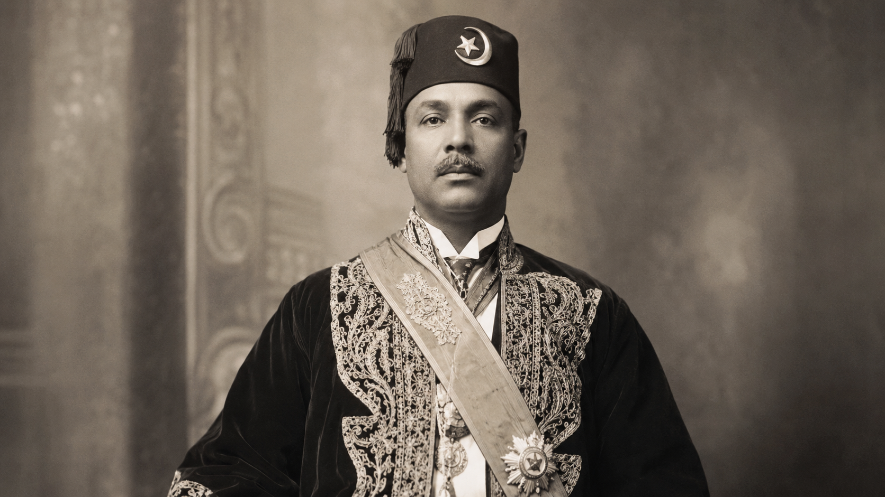
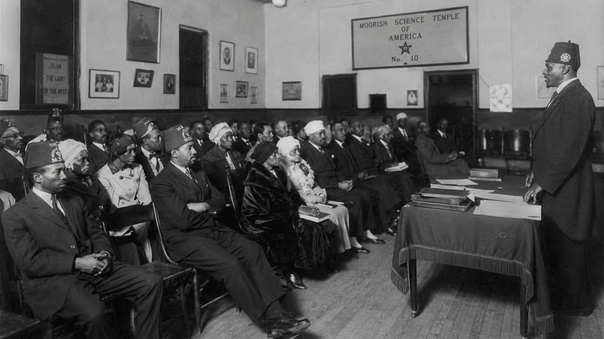

Circle 7, Noble Drew Ali, and the Mystical Rebirth of Moorish Science
There are certain books that do not enter history as mere books. They arrive as seals, as signs, as passwords to a buried identity. The Circle 7 Koran of the Moorish Science Temple of America is one of these strange and luminous texts: part scripture, part manifesto, part symbolic charter of a people seeking to remember themselves in a world that had renamed, displaced, and spiritually disinherited them.
Officially titled The Holy Koran of the Moorish Science Temple of America: Circle 7, the text was published by the Moorish Science Temple of America in 1927 and is preserved by the Library of Congress as a 63-page work associated with Drew Ali, the Moorish Science Temple of America, and the Omar Ibn Said Collection. But to understand Circle 7 only as a pamphlet is to miss its deeper function. It was a symbolic instrument. It gave language to a people whose ancestral names had been stolen. It gave sacred geography to those scattered by slavery, segregation, and migration. It gave nationality, metaphysics, discipline, and mythic orientation to Black Americans searching for more than survival.
At the center of this movement stands Noble Drew Ali, born Timothy Drew, the founder of the Moorish Science Temple of America. The New York Public Library's Schomburg Center describes the Temple as founded by Noble Drew Ali in 1913 and rooted in a blend of Black nationalism, Christianity, Islam, and religious philosophy. Yet Moorish Science was not merely a religious sect. It was a spiritual correction of identity. It taught that the descendants of enslaved Africans in America were not the broken racial categories imposed upon them - "Negro," "colored," or "black" - but Moorish Americans, heirs to an older Asiatic and North African inheritance.
This was radical. Not merely politically radical, but ontologically radical. It asked the individual to stop identifying with the wound and begin identifying with the source.

The Circle and the Seven
The cover symbol itself is part of the mystery: a red number seven enclosed within a blue circle. This emblem gave the book its popular name, the Circle Seven Koran. The Library of Congress lists "Circle 7" as its other title, and the visual mark became inseparable from the movement's sacred identity.
The circle is one of humanity's oldest symbols of wholeness: eternity, completion, divine enclosure, the unbroken horizon. The seven is the number of sacred order: seven heavens, seven planetary spheres, seven days, seven seals, seven liberal arts, seven metals of alchemy, seven stages of ascent. In the context of Moorish Science, the Circle 7 can be read as a symbol of restoration. The scattered self is gathered back into circumference. The lost name is returned to its center.
The red seven suggests vitality, blood, fire, command. The blue circle suggests law, heaven, protection, and divine atmosphere. Together they form a compact esoteric statement: the living soul must be enclosed within divine order before it can remember its royal origin.

A Scripture of Reconstruction
The Circle 7 Koran is unusual because it does not fit neatly into standard categories of Islamic scripture, Christian scripture, or Western esoteric literature. It is a syncretic text, meaning it gathers material from multiple streams and reorients them toward a new mission. Scholars and archival descriptions consistently note the Temple's blending of Christianity, Islam, Black nationalist thought, and alternative spirituality.
This blending is one of the reasons the text remains so fascinating. Circle 7 is not simply "about" religion. It is about re-naming reality. It takes the language of prophets, moral law, Asiatic identity, Jesus traditions, ancient wisdom, and divine nationality, then places them inside the lived historical crisis of Black America in the early twentieth century.
The result is a book that functions like a metaphysical passport. It tells the reader: you are not what empire called you. You are not the social fiction built around your oppression. You have a name, a nation, a law, a divine origin, and a duty.
This is why Moorish Science should be understood not only as theology, but as sacred identity-work.

Noble Drew Ali and the Mission of Uplift
Noble Drew Ali's mission unfolded during one of the most intense transformations in African American history. The early twentieth century saw large numbers of Black Americans leaving the South during the Great Migration, entering northern cities where they faced new forms of discrimination, economic uncertainty, and social dislocation. Moorish Science emerged in this atmosphere as a doctrine of spiritual uplift, racial reclassification, moral discipline, and communal pride.
The Schomburg Center notes that Ali taught the Five Divine Holy Principles: Love, Truth, Peace, Freedom, and Justice, and that the movement's purpose was to "uplift" African Americans. These five principles were not abstract virtues. They were civic, spiritual, and initiatory disciplines. They formed the ethical architecture of Moorish Science.
Love healed the shattered community.
Truth corrected the false name.
Peace restored inner sovereignty.
Freedom broke the psychic chain.
Justice aligned the individual with divine law.
In this sense, Moorish Science did not simply preach belief. It prescribed transformation. The follower was to become disciplined, dignified, law-abiding, spiritually awake, historically conscious, and nationally identified.
Nationality as Spiritual Technology
One of the most powerful dimensions of Moorish Science is its teaching on nationality. In ordinary political terms, nationality is a legal or civic category. But in Moorish Science, nationality becomes something deeper: a spiritual technology of self-recovery.
Members of the movement adopted names ending in El or Bey, signs of a restored Moorish identity. The Schomburg Center notes that "Nationality and Identification" cards were essential because they symbolized a member's new ethnic identity. This was not a small gesture. In a society that had used naming as a weapon - slave names, racial labels, census categories, segregation codes - the act of renaming became sacred resistance.
To say "I am Moorish American" was to reject the imposed category and claim an ancient dignity.
This is where the esoteric meaning deepens. A name is never merely a label. In nearly every sacred tradition, the name is a key to essence. To know the true name of a thing is to know its nature, origin, and power. Moorish Science understood this instinctively. It treated identity as a matter of spiritual law.
The question was not simply, "What do others call us?"
The deeper question was, "What did God make us before the world misnamed us?"
The Moorish Mythos
The historical claims of Moorish Science are not accepted by all historians in a literal sense, especially its sweeping teachings about African Americans as descendants of ancient Moabites or Moors. But myth must not be dismissed as "mere fiction." Myth is often the language by which wounded peoples restore cosmic orientation.
Moorish Science offered a mythos of origin. It connected Black Americans to Morocco, North Africa, Islam, the ancient East, and the broad category of "Asiatic" identity. The Schomburg Center records that Ali referred to people of color as Asiatics and African Americans specifically as Moorish Americans, descendants of the Moors of North Africa.
In the white supremacist imagination of early twentieth-century America, Blackness was treated as lack: lack of civilization, lack of history, lack of refinement, lack of nationhood. Moorish Science reversed the spell. It declared that the people called "Negro" were not a lack, but a hidden nobility. They were not outside history, but heirs to a concealed history. They were not socially dead, but spiritually misidentified.
This was the genius of the Moorish mythos: it restored symbolic ancestry where America had imposed social erasure.
Circle 7 as Esoteric Christianity, Islamic Memory, and American Mystery
The Circle 7 Koran is often described as Islamic, and it belongs to a movement that understood itself through Islam. Yet its actual texture is far more layered. It contains Christian motifs, Qur'anic language, prophetic authority, moral instruction, and esoteric currents. Susan Nance's scholarly work on the Moorish Science Temple places the movement within the world of alternative spirituality and self-improvement currents in 1920s Chicago.
That context matters. The early twentieth century was filled with spiritual experimentation: New Thought, Theosophy, Rosicrucianism, fraternal orders, metaphysical Christianity, occult revivals, and new religious movements. Moorish Science stood at a crossroads where these streams met the urgent needs of Black urban life.
Circle 7 therefore speaks in multiple registers.
To the religious seeker, it is revelation.
To the historian, it is a document of Black religious innovation.
To the esotericist, it is a text of symbolic reconstruction.
To the sociologist, it is a vehicle of communal identity.
To the initiate, it is a book of remembrance.
Its central mystery is not simply what it says, but what it does. It takes a displaced people and places them back inside a sacred cosmos.
The Holy Day, the Fez, and the Discipline of Form
Moorish Science also expressed itself through visible forms: the fez, the turban, the greeting of "Peace," the adoption of El and Bey, the Friday holy day, and strict moral codes. The Schomburg Center records that followers treated Friday as their holy day, worshipped three times daily, greeted fellow members by saying "Peace" or "Islam," and adopted El or Bey to demonstrate ethnic identity.
These forms matter. Every spiritual movement needs ritual embodiment. Without form, identity remains an idea. With form, it becomes a way of walking, dressing, greeting, praying, eating, speaking, and standing in the world.
The fez in Moorish Science became more than a hat. It was a crown of remembrance. The name suffix became more than a syllable. It was a seal. The greeting became more than courtesy. It was a spoken atmosphere.
Moorish Science created a complete symbolic environment in which a person could live inside a new identity until that identity became real in the body.

The Secret of Uplift
The word "uplift" appears often in discussions of Noble Drew Ali's mission, but it deserves deeper attention. Uplift is vertical language. It implies ascent. Something fallen is being raised. Something buried is being brought back into light.
The Circle 7 Koran itself speaks through this vertical imagination. The human being is not merely educated; he is redeemed. He is brought from a fallen stage into a higher plane of life. The movement's entire structure is an ascent from social degradation into divine nationality.
This is why Moorish Science should be understood as an initiatory movement of identity. Its promise was not only that the individual could believe differently, but that the individual could become different.
The fallen name could be shed.
The forgotten origin could be remembered.
The scattered nation could be gathered.
The person could stand upright again.
Legacy and Influence
The Moorish Science Temple expanded rapidly in the late 1920s. The Schomburg Center notes that some historians estimate around thirty thousand members at the movement's peak, and that by 1928 there were temples in Harlem, Philadelphia, and several southern cities, along with Moorish grocery stores, schools, youth groups, newspapers, and magazines.
After Noble Drew Ali's death in 1929, the movement experienced fragmentation, and later Black Islamic movements emerged in the same larger religious landscape. The Schomburg Center notes that W.D. Fard, later associated with the beginnings of the Nation of Islam, was connected in the aftermath of the movement's factionalization. Scholars of African American Islam have often treated Moorish Science and the Nation of Islam as two of the earliest major African American Muslim movements, each teaching that Islam was in some sense the original or inherent religion of African Americans.
But Moorish Science deserves to be seen on its own terms. It was not merely a prelude to later movements. It was a complete symbolic universe: a sacred geography, a national myth, a moral code, a ritual style, and a metaphysical counter-history.
Its legacy survives wherever people ask: What happens when the oppressed refuse the names given by oppression? What happens when a people reconstruct themselves through sacred memory?
The Red Seven Still Burns
The Circle 7 Koran remains captivating because it stands at the intersection of mystery and history. It is a small book with a large shadow. Its pages hold the turbulence of the Great Migration, the longing for ancestral dignity, the esoteric currents of early twentieth-century America, the search for Islam among Black Americans, and the prophetic imagination of Noble Drew Ali.
The red seven inside the blue circle is more than an emblem. It is a diagram of return.
The seven descends like a flame of identity.
The circle gathers what was scattered.
Together they say: the lost nation is not lost forever.
Moorish Science, at its deepest level, is the science of remembrance. It teaches that a people can be renamed, but not erased. They can be displaced, but not metaphysically destroyed. Beneath the imposed identity waits another identity. Beneath the wound waits the seal. Beneath history waits a hidden name.
And Circle 7 is the sign that the name can be spoken again.